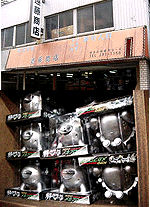
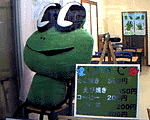
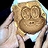
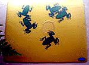

|
カエルクララにクーラクラ！【仙台発=ジョゼフィーヌ・クララ同志記者】クララだべ。カエル新聞最高です。就職活動で忙しく冬眠してました・が・無事、エフエム××に入社が決まり、電波でカエル洗脳を日本人に浴びせたいと思ってます！おーいえーい。ということで、カエルプリンセス目指して・・・はいよ！おしゃれのポイントは、頭部にとっても優雅なシャワーキャップ（目玉つき）。カエルマスクでおちゃめに迫り、お召し物は、エフエム××マスコットキャラ、エイティージョン君Ｔシャツ着用です。 なお、日経ネットナビＨＰ大王にクララのＨＰをノミネートしました。上位になった暁には、カエルの被り物で雑誌に載ろうと思っています。是非、投票をお願いします。ゲコゲコ！バイチャ！ ジョゼフィーヌ・クララ妃の『クラ園』投票場所は、日経ネットナビHP大王です。 クララ同志に支援の投票を！【全国かえる奉賛会】酢薔薇シー（すばらしい、の誤変換最上級）さっすがクララ同志だ。４つのおメメで、相手をみれば、面接担当者もクラクラしてしまい。カエルに採用というわけだ。これからは、電波にカエルをのっけて日本全国をカエルに洗脳しよう。まず、入社したら、エイティージョン君をカエル化することだああ。
デビュー前に、日経ネットナビ大王にも即位してほしいので、カエラー代表のクララページにみんなも投票しようではないかああああああああ。
メカフロッグ備蓄基地を発見！ 【福岡発花椿＊蘭子清純派欲望ＯＬ様】こんにちは。花椿＊蘭子です。平成12年10月6日号で紹介された、あの金属製のカエル”ゲコゲコメカフロッグ”を先日、大量に見つけちゃいました！その場は”遠藤商店”。福岡市の博多の路地にひっそりある駄菓子などの問屋さん。散歩中になにげに入ってみたところ、左手の棚に、大量のメカフロッグを見つけ・・・私たち狂喜狂乱しちゃいました！ 大量のメカフロッグを仕入れているようですが、在庫を抱えて遠藤商店の経営が悪化してはいけません。みんなで商品を購入しましょう。もし、カエラーの方で、ぜひともメカフロッグが欲しい、という方には、この情報を伝えてあげてください。んじゃ。
深夜に爆走するメカフロッグの勇姿=かえり同志記者の体験ルポ= 【福岡発かえり同志記者】「ケロケロメカフロッグ」を、福岡市のマニアック電気店カホ無線で６８０円也で購入しました。大王は１０００円ショップで入手したそうなので、短期間で市場価格が暴落しているのが気になりますが(笑)
【福岡発かえり同志記者】「ケロケロメカフロッグ」を、福岡市のマニアック電気店カホ無線で６８０円也で購入しました。大王は１０００円ショップで入手したそうなので、短期間で市場価格が暴落しているのが気になりますが(笑)さっそく翌日に購入してきました。店頭に神々しく鎮座ましましていたそのお姿はまさに後光がさしているかの如く光っておられました。その６８０円也と単三乾電池２本を購入し、芝居の稽古（編集部注；彼女は芝居で主役やるので練習中）へと向かい、練習中に開封したい気持ちをぐっとこらえ、深夜に帰宅してさっそく電池を装備させ、スイッチをオンにしたとたん・・・
壮烈！！高級アパートにメカフロッグ駆動音！
ガシャコン、ガシャコン、ガシャコン、ガシャコン「ゲロゲロ、ゲロゲロ」（目から赤色のビーム）ガシャコン、ガシャコン、ガシャコン、ガシャコン「ゲロゲロ、ゲロゲロ」（目から赤色のビーム）・・・・すさまじい音がわがボロアパートを震撼とさせました。
斬新！！目覚ましバージョンを考案！すぐさまスイッチをオフにし、「これは夜中にスイッチを押してはいけないという注意書きが必要だな」とひとりなんとなくうなずいてしまいました。これにヒントを得て、「ケロケロメカフロッグ〜目覚ましバージョン〜」なんてどうかなー。
寝ぼけ眼で止めようとすると、ガシャコンガシャコンと移動し、起きようとしないヤツには赤色ビームで・・・あぁ、スイマセン。ひとりの世界に入ってしまいました。それでは、また〜。
イズノスケは年内限り、グッズゲットを急げ！ 【神奈川発伊藤正勝、薫同志記者】伊豆に遊びに行った時、仕入れてきた期間限定キャラ「イズノスケ」に関するネ情報です。 １．河津の新名物「イズノスケ焼き」河津駅正面にある河津駅前プラザの通りを入ってすぐです。店内には、店長の妹さん手作りの巨大イズノスケ人形が温かく出迎えてくれます。 おすすめはイズノスケ焼き。現在確認されているだけで、あん、チーズ、ハンバーグ、ツナ、カレー等数種類あります。  イズノスケが可哀想で食べられないというカエラーのお腹を満たす為の心使い?で、たこ焼き、えび焼きもあります。更に、今では幻となったイズノスケ缶ビールが飲めるかもしれません（。関東近県は勿論、全国のカエラーの皆さん憩いの場所として有名になって欲しいと思います。
２．伊豆高原駅でアンケートに答えてイズノスケ缶バッジをもらう
３．ダイドーのイズノスケプリント缶を高確率で手に入れる方法
関東ではTV番組「贅沢な休日」のお陰でかなり知名度が上がってきたイズノスケですが、チェンジ伊豆2000のマスコットキャラクターとして生まれた為、今年限りで消え行く運命にある様です。先の「ほのじ」の店長さんの話でも、年明けからはイズノスケ焼きの販売が出来なくなるので、タイ焼きに戻すそうです。
カエルマウスパッドを入手！ 【日本発きーちゃん同志記者】カエルマウスパッドを入手しました。マウスパッド内部に水とグリセリンの混合液体が封入されていて、マウスを動かす度に内蔵されたリアルタイプのカエルさん５匹が楽しそうに動きまわる…という超なごみ系の実用品です。このシリーズにはおたまじゃくしもあるのですが、私が見た時にはこちらは品切れ中でした。マウスパッドは1800円。お揃いでコースターもあります(500円)。ドイツ製。但し、耐久性についてはちょっと不安があります…。【全国かえる奉賛会】マウスパットの登場でパソコン周辺機器のカエル化も相当に進んできたぞ。あとは、i-macやi-bookの緑色をさらに進化させて、カエルデザイン化すると、カエラーにとっては、楽天的なパソコンライフがおくれるというものである。
カエルのパソコンカバーも発売！【東京発mizuさん同志記者】新宿の東急ハンズに行ったらカエルのPCカバーを発見しました上にリンクを張ってるので、とりあえず、見てみてください！14-21インチのモニターや、タワー型のPCなどに自由に取り付けられます。ハンズでの販売価格は3900円でした。私は衝動買いしてしまい、現在家のPCに向かうと、カエルと向かいあえて、なかなか幸せな気分です。カエルストラップで持ち主にカエル！！【北九州発ＮＩＫＯちゃん大魔王同志記者】携帯電話を小倉から乗った特急に置き忘れました。でもカエルのモローキーホルダーを２つもつけていたので、もう安心。すぐに民営化した日本国有鉄道に電話連絡して、確保してもらい旅行から帰りついたら、先に、携帯電話がお出迎え。長崎駅の遺失物係りさん、電話で御礼を申しましたが、重ねてありがとう。やっぱりカエルストラップでよかったなー。
ケロケロ・キングを目指そう！【日本発eiichi同志記者】「ケロケロ・キング」という、プレステ用のゲームを楽しまれているカエラーの皆様もいらっしゃることでしょう。「カエルをとばすスポーツ、それがケロフ」。おとといTVでCMを見てしまい、昨日は発売日ということで矢も盾もたまらずゲーム屋さんに行って買ってきました。ようはゴルフなのですが。カエル好きとしては、直にカエルを「打つ」のではなく、小型のシーソー様のモノで「とばす」ところが安心設計です。ボールがバウンドするように、飛んだカエルがビヨ〜ンビヨ〜ンと跳ねる様は、たいへんなごみます。表情豊かなカエル達を、機会がありましたら、おためしくだされ。 公式サイトもあります。 eiichi同志記者直筆署名
@..@
(----)
( >__< )
^^ ~~ ^^
１２日から、第１回「かえる秋祭り」【東京発石居カエル博士同志記者】かえる友の会は「かえる秋祭り開催」を開きます。 かえる友の会主催ののお知らせ。
会場ではカエルにちなんだ、陶器、人形、アクセサリー、彫金、Ｔシャツ、マグカップ、ポストカード、時計、温度計、版画などなど数々のオリジナルグッヅのほか、会員のコレクションのうちの重複不要品などのフリーマーケットを開きます。
この他、かえるにちなんだ着物、帯、カレンダー、写真などの展示、粘土度細工とマグカップやＴシャツのプリントのようなその場で製作するイベント、特別企画の福山欣司さん（慶応大学助教授カエル探偵団主催者）による「カエルの話」も１時半から予定されています。かえる友の会は会員証をご持参下さい。提示いただくと特性バッヂをお一人１個差し上げます。
詳しくはこのページも見ましょう！
げこげこ大王の？？大王麺を発見！【宮崎発しっぽ隊長閣下】娘を連れて家内の実家に帰ったおり、大王様の御威光に触れさせようと平成９年5月20日号で紹介した野尻湖へ行って参りました。そこで「大王めん」なる垂れ幕発見しました。その時の写真です。ド○えもん牛乳と一緒で大王様の味がするとか（笑）（ピ○チュウ振りかけ見たいに粉になって入ってるとか）ご休憩所は休みで入れなかった為、どんなものか不明です。
【全国かえる奉賛会】げこげこ大王の威徳を広めるために、このような大規模施設を建設して、麺を販売しているのであろうか。カエル出汁などをとっていないことを祈る！どんな麺なんだろうか。気になる。

カエルサボテン残数１個に！【けろテン市場】好評販売中のカエルサボテンは、かえるサボテン010号…ケロッピ…だけになりました。欲しい人は、カエルサボテン屋に急ごう！間もなく締め切りだああああああ。売り切れ御免！
投稿採用者に武功カエル徽章を授与！ |
かえる古新聞過去に取り上げた記事を見出し付きで一覧したい人は、ここをクリック◆創刊号を見る◆先週号を見る◆話題の号を見る◆かえる新聞の昔を読む◆COOL NET FROG RANKING !
|
私も入っています。。全国かえる奉賛会
大王様に会うには、このバナーをクリック。ずっと奥に写真館があるぞ。全国かえる奉賛会に入会するには、自分のホームページのどこかに、下の部分を追加するとバナーがリンク付きで表示されるぞ。どんどん入会しましょー |


|